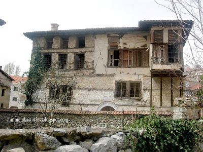
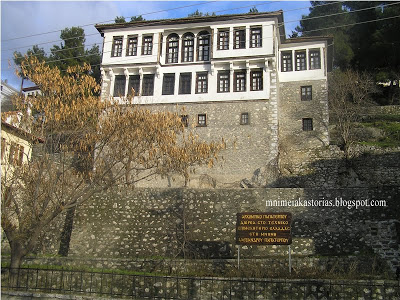

Το σπήλαιο βρίσκεται στη βόρεια πλευρά της πόλης στο 2ο χλμ της παραλίμνιας οδού Σουγγαρίδη και λίγο πριν από την Μονή της Παναγίας Μαυριώτισσας. Η είσοδος απέχει περίπου είκοσι (20) μέτρα από τις όχθες της λίμνης και 14 μέτρα από τον δρόμο. Στο εσωτερικό του υπάρχουν μεγάλα χερσαία και λιμναία τμήματα με εντυπωσιακό σταλακτικό διάκοσμο καθώς περιλαμβάνει επτά (7) υπόγειες λίμνες, δέκα (10) αίθουσες, πέντε (5) διαδρόμους – σήραγγες. Η μεγαλύτερη αίθουσα του σπηλαίου έχει διαστάσεις 45Χ17 μέτρα με το κεντρικό της τμήμα υπερυψωμένο και τις πλευρές της να καταλήγουν σε λίμνες. Η μεγάλη λίμνη του σπηλαίου που είναι και η βαθύτερη βρίσκεται δυτικά. Η θερμοκρασία εντός του Σπηλαίου είναι σταθερή όλες τις εποχές στους 16-18Οc, ενώ η υγρασία φτάνει στο 90%.
Στο εσωτερικό του σπηλαίου του Δράκου εντοπίστηκαν παλαιοντολογικά κατάλοιπα, με κυριότερα τα οστά σπηλαίας άρκτου ή αρκούδας των σπηλαίων (Ursus Speleaus). Το είδος αυτό έζησε στην Ευρώπη κατά τη διάρκεια του Πλειστόκαινου και εξαφανίστηκε πριν από περίπου 10.000 χρόνια. Το όνομά της οφείλεται στο γεγονός ότι τα απολιθωμένα λείψανά της εντοπίζονται σχεδόν αποκλειστικά μέσα σε σπήλαια, όπου προφανώς διέμενε για περισσότερο χρονικό διάστημα, σε αντίθεση με την καφέ αρκούδα η οποία χρησιμοποιούσε τα σπήλαια μόνο κατά την διάρκεια της χειμερίας νάρκης. Υπολογίζεται ότι το βάρος των αρσενικών ζώων έφτανε τα 400-500 κιλά και των θηλυκών τα 200-250 κιλά. Ήταν κατά βάση φυτοφάγο και περιστασιακά σαρκοφάγο ζώο.
Είναι σημαντικό ότι έχει ληφθεί κάθε απαραίτητο μέτρο για την ασφάλεια των επισκεπτών και οι επεμβάσεις στο εσωτερικό έγιναν με τρόπο ώστε να μη θιχθεί η φυσική κατάσταση του Σπηλαίου.
Η Λίμνη Ορεστιάδα ή, ορθότερον[1][2], λίμνη της Καστοριάς βρίσκεται στην βορειοδυτική Ελλάδα στο μέσο της οποίας "δίκην νησίδος" είναι χτισμένη η Καστοριά. Βρίσκεται σε υψόμετρο 630 μ. πάνω από την επιφάνεια της θάλασσας, έχει 28 τετ. χλμ., λεκάνη απορροής 253 τετ. χλμ. και είναι η ενδεκάτη σε μέγεθος λίμνη στην Ελλάδα.[3] Το βάθος της κυμαίνεται από 1,4-12 μέτρα και η μέση θερμοκρασία είναι 22 βαθμοί Κελσίου. Η λίμνη έχει πολλές εισροές νερού από τα δυτικά και μια εκροή στον ποταμό Αλιάκμονα. Σε παλαιότερη εποχή η λίμνη περιέβαλλε εξ ολοκλήρου το βραχόβουνο που σχημάτιζε έτσι μια νησίδα.[4] Το μήκος των ακτών της είναι περίπου 30 χιλιόμετρα και ο όγκος των νερών 100.000.000 κυβικά μέτρα. Χαρακτηριστικό της λίμνης είναι ότι παγώνει για περίπου δεκαπέντε μέρες το χρόνο. Παλιότερα δε, ο πάγος ήταν τόσο παχύς που από πάνω περνούσαν κάρα φορτωμένα.
Το ενυδρείο «Οικουμενικός Πατριάρχης Βαρθολομαίος», στήθηκε με την βοήθεια της ιχθυολόγου Άννας Λάτσιου, και ήταν μια πολύ θετική ενέργεια που χαιρετίσαμε όλοι εμείς οι λάτρεις του ψαρέματος, αλλά και όλοι οι υπόλοιποι πολίτες της Καστοριάς ,που αγαπούν το περιβάλλον των γλυκών νερών της χώρας μας. Το εγκαινίασε ο Οικουμενικός Πατριάρχης Βαρθολομαίος, και για αυτόν τον λόγο φέρει το όνομά του.
Τα περισσότερα ψάρια που θα δείτε μέσα στο ενυδρείο είναι αυτά που ζούνε εδώ και χρόνια στα εσωτερικά ύδατα της Ελλάδας, αλλά υπάρχει και μεγάλος αριθμός ξενικών ειδών που διαβιούν στις λίμνες και στα ποτάμια της χώρας μας. Το ενυδρείο αποτελείται από 49 δεξαμενές χωρητικότητας από 1 έως 1,6 κυβικά μέτρα, υπάρχει μία όμορφη προσομοίωση της λίμνης της Καστοριάς και μία προσομοίωση του ποταμού Αλιάκμονα.
Οι οικίες αυτές διαχωρίζονται σε αρχοντικές οικίες και λαϊκά παραδοσιακά. Στα δυο πρώτα μέρη του αφιερώματος, θα καταγράψουμε τα αρχοντικά που διασώζονται, από τα γνωστότερα έως τα λιγότερα γνωστά. Βέβαια η διάκριση μεταξύ αρχοντικού και λαϊκού παραδοσιακού δεν ξεκάθαρη. Σίγουρα αρχιτεκτονικά στοιχεία, όπως το μέγεθος του κτιρίου αποτελούν παράγοντα διαχωρισμού. Όμως σε κάποιες οικίες επικράτησε καταχρηστικά ο όρος αρχοντικό, λόγω της κοινωνικής αναγνώρισης που είχε η οικογένεια που ζούσε σ’ αυτά. Τα αρχοντικά της Καστοριάς διαχωρίζονται σε τρεις διαδοχικούς βασικούς τύπους: στον τύπο Α, που είναι ο παλαιότερος και έχει ορθογώνια κάτοψη και χωρίζεται με ένα μεσαίο κατά μήκος τοίχο. Στον τύπο Β που παρουσιάζει κάτοψη σχήματος Γ ή Π και στον τύπο Γ που επικρατεί μετά τα μέσα του 19ου αιώνα και παρουσιάζει τετράγωνη κάτοψη με τέσσερις οντάδες στις γωνίες και ενδιάμεση σταυρόσχημη σάλα. Πάμε να τα δούμε ένα, ένα καθώς και τις μικρές ιστορίες που τα ακολουθούν…
Βρίσκεται στην οδό Βυζαντίου 28 στο Ντολτσό. Κατασκευάστηκε το 1750 και αρχικά ήταν τετραώροφο, αλλά περίπου το 1888 ο τελευταίος όροφος κατεδαφίστηκε. Αρχιτεκτονικά ανήκει στον τύπο Α των αρχοντικών. Είναι γνωστό ότι η οικογένεια Μπασάρα είχε έντονη εμπορική δραστηριότητα κατά το πρώτο μισό του 19ου αιώνα στην Κωνσταντινούπολη. Αναφέρεται και ως αρχοντικό Αλβανού από το όνομα του τελευταίου ιδιοκτήτη. Το αρχοντικό δυστυχώς, είναι σε κακή κατάσταση και “περιμένει” να γίνουν πράξη οι εξαγγελίες για αποκατάσταση του και δημιουργίας σε αυτό μουσείου γούνας
ο πιο πολυφωτογραφημένο αρχοντικό της πόλης, βρίσκεται στην νότια παραλία, στην οδό Μεγ. Αλεξάνδρου 141. Κατασκευάστηκε το 1880 από τεχνίτες του Νεστορίου και αρχιτεκτονικά ανήκει στο τύπο Γ των αρχοντικών. Είναι τριώροφο και αρχικά ήταν κατοικία του Τούρκου μουλά Ιμπραήμ και μετά την απελευθέρωση πέρασε στα χέρια της οικογένειας Παπατέρπου, η οποία κατάγεται από το Νεστόριο. Ανακαινίστηκε σε μεγάλο βαθμό το 1987 και σήμερα διατηρείται σε καλή κατάσταση.
